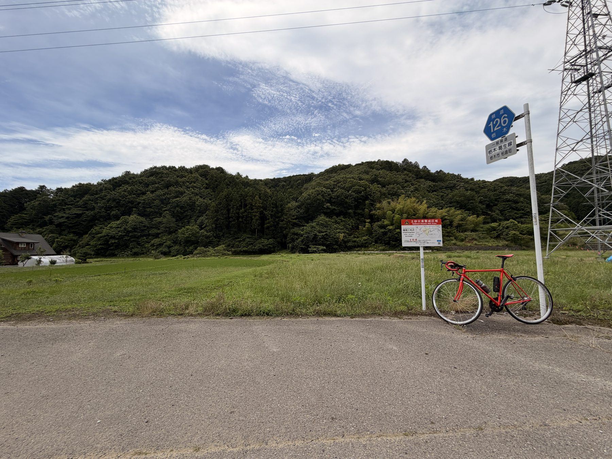
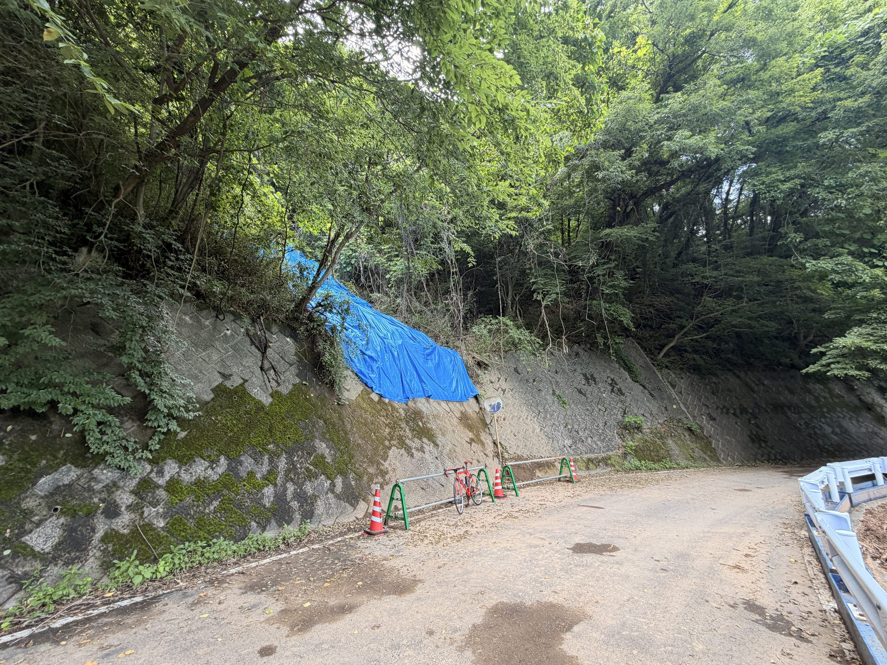
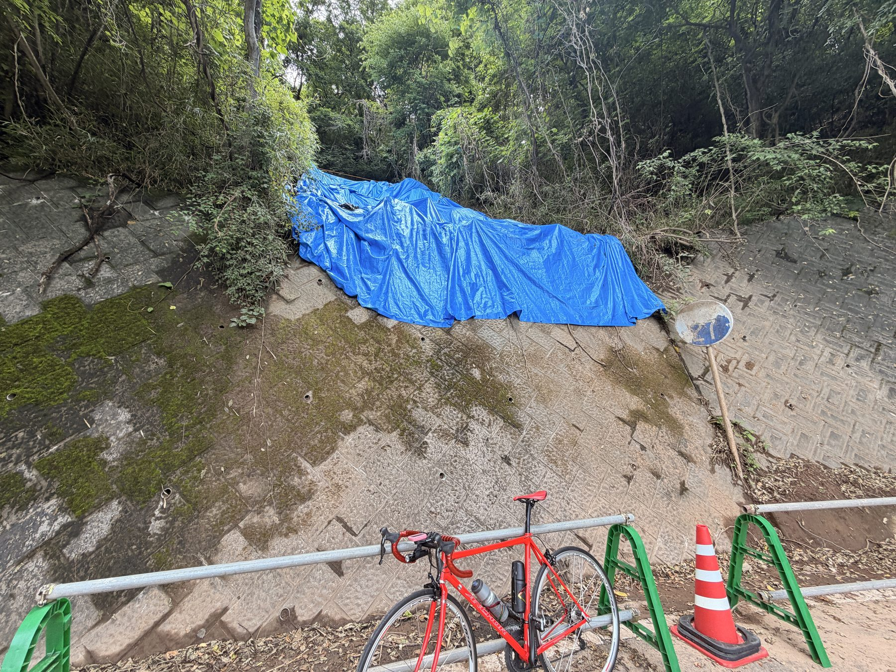
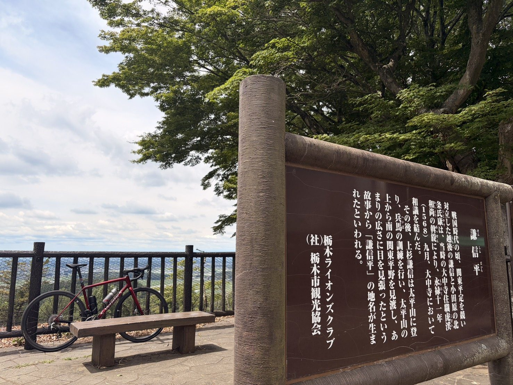
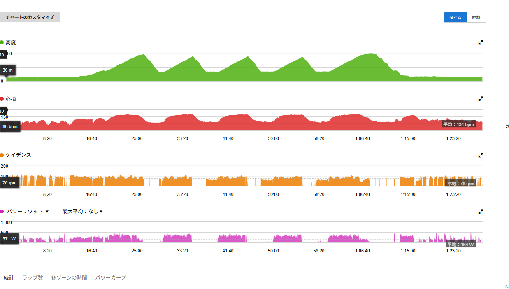

唐沢5分337W、琴平12分305W。
ローラー後でも外なら踏めた
今日は外を走ってきた。ここ2日は雨でローラー。1日目はSST、2日目はVO2で、どちらもそれなりに内臓へ話しかけてくるタイプの練習だった。普通なら少し軽めにしてもよさそうな流れだが、天気が良くなると話が変わる。
行き先は唐沢山と琴平峠。ローラー2日分の疲労はあるので完全にフレッシュではない。でも練習前の気持ちはかなり前向きだった。外なら走れる。外なら踏める気がする。結果として、今日はかなり追い込めたと思う。

全部読むのが面倒な人向けまとめ
- SSTとVO2のローラーを2日続けたあと、唐沢山と琴平峠を走った。
- 唐沢は5分05秒337W。5分ONとしてしっかり踏めた。
- 琴平は12分19秒305W。前半を抑えて、後半に垂れないように上げる意識でかなりきつかった。
- 帰りのラストストレートは16分57秒265W。SSTレベルを意識して踏んだ。
- 全体は47.20km、NP240W、IF0.872、TSS133.7。ローラー後でも外ならまだ踏める感覚があった。
今日の主役は唐沢と琴平
今日の全体は47.20km、1時間46分、獲得標高578m。平均パワー180W、NP240W、IF0.872、TSS133.7だった。数字だけ見ても、これは軽い外乗りではない。ローラー2日後にやる内容としては、わりと元気である。本人の感覚としても、今日は大分追い込めた。
ただし、全部のデータをここで並べると本文が数字の壁になる。今日の主役は3つ。唐沢の5分、琴平の12分、帰りのラストストレート。この3本だけ見れば、今日のライドの中身はだいたい伝わると思う。
- 唐沢5分05秒 / 337W / NP339W
- 琴平12分19秒 / 305W / NP305W
- ラストストレート16分57秒 / 265W / NP268W
唐沢：5分05秒 337W
まずは唐沢。今日は唐沢を5分ONのつもりで踏んだ。結果は5分05秒で平均337W、NP339W。FTP設定275Wに対して約122％なので、VO2からゴルビー寄りの強度になる。
昨日のローラーでは、VO2 3分×4本の4本目でえづくくらいきつかった。それを考えると、外の唐沢で5分337Wを出せたのはかなり良い。もちろん楽ではない。楽ではないが、ローラーとは違って勾配も景色も変わる。ダンシングも使える。体の使い方を変えられる。
同じ高強度でも、外の方がまだ踏みやすい感じがあった。唐沢は短くしっかり踏むにはかなり良い。今日はまさに、5分ONとしてしっかり刺激を入れられた。
琴平：12分19秒 305W
次は琴平峠。今日のメインはここだったと思う。12分19秒で平均305W、NP305W。FTP設定275Wに対して約111％。時間も12分以上あるので、これは普通にきつい。
走り方としては、前半は抑え気味。後半は垂れないくらいに上げる意識で踏んだ。最初から突っ込みすぎると後半に終わる。でも抑えすぎると練習として物足りない。そのあたりを探りながら、後半も出力を落としすぎないようにした。
結果は平均305W。唐沢の5分337Wも強かったけれど、体感としては琴平の方がきつかった。長い。途中で終わってくれない。前半抑えても、後半に上げるとやっぱり苦しい。心拍も最大168bpmまで上がっているので、今日は「大分追い込めた」と言っていいと思う。

琴平の土砂崩れ箇所を見に行った
琴平では、最近土砂崩れがあった。その影響で一部にブルーシートが掛かっていた。今日はその写真も撮りたかったので、一度途中まで下って再度上った。登りで追い込んだあとに、写真のためにもう一度上る。冷静に考えると、あまり楽な趣味ではない。
写真で見ると、ブルーシートの存在感がかなり強い。山道は気持ちいいけれど、こういう場所を見ると自然相手の道なんだなと思う。走れる場所があるのはありがたい。そして走るなら安全第一である。そこは調子に乗らない。

ラストストレート：16分57秒 265W
琴平を下って、家に帰る途中に長い直線がある。ここはSSTレベルを意識して踏んだ。結果は16分57秒で平均265W、NP268W。FTP設定275Wに対して、ほぼFTP下限からSST高めくらいの出力である。
唐沢と琴平でかなり踏んだあとに、ここで16分57秒265Wを入れられたのは良かった。もちろんキツかった。でも琴平の方がきつかった。ラストストレートは登りほど逃げ場がない。ただ、平坦や緩い区間のSSTは登りとはまた違うきつさがある。
登りは勾配があるので踏まざるを得ない。平坦は気を抜くとすぐ落ちる。だからこそ、SSTレベルを意識して踏むには良い区間だった。今日のライドは、唐沢で5分ON、琴平で12分高出力、最後にラストストレートで16分SST。かなり内容が濃い。
ローラー2日後に外を走って思ったこと
ここ2日はローラーだった。SSTでは心拍と呼吸がきつくなった。VO2では4本目でえづくくらい苦しかった。ローラーはかなりきつい。今日、外を走ってみて思ったのは、ローラーはずっと同じポジションになりやすいということだった。
特に私のローラーはGT-ROLLER Q1.1。4本ローラーなので、外のように強くダンシングするのは難しい。同じ姿勢、同じ景色、室内の暑さ、逃げ場の少なさ。これが積み重なって、ローラーは数字以上に疲れるのかもしれない。
外は外できつい。唐沢もきつい。琴平もめちゃきつい。ラストストレートも普通にきつい。でも外には選択肢がある。ダンシングできる。ポジションを変えられる。勾配が変わる。景色も変わる。同じ「踏む」でも、体の使い方に幅がある。だから今日は、外の方がまだましに感じた。
これは少し大きな発見だった。ローラーで踏めないから弱い、という単純な話ではない。ローラーにはローラーのきつさがある。外には外のきつさがある。どちらも必要だと思う。困った。どっちも必要になってしまった。
3日連続でかなり踏んだ
ここ数日を振り返ると、SSTローラーがTSS66.7、VO2ローラーがTSS73.6、今日の唐沢＋琴平がTSS133.7。合計でかなりの負荷になっている。特に今日は、唐沢5分337W、琴平12分305W、ラストストレート16分265W。これは普通に追い込んでいる。
最近のテーマは、SSTとVO2を鍛えること。そして1時間300Wへ少しずつ近づくこと。今日の外ライドでは、その練習が外でもちゃんと出力につながっている感じがあった。ローラーで苦しんだVO2。ローラーで積んだSST。それが唐沢や琴平で使えている。
もちろん、まだまだ足りない。でも、できないことを少しずつ潰していく流れの中では、今日のライドはかなり良かったと思う。
回復も練習の一部
今日はかなり汗をかいた。推定発汗量は1,470ml。平均気温27.9℃、最高気温32.0℃。暑かった。TSSも133.7あるので、今日の夜は回復優先でいきたい。
水分を戻す。塩分も少し入れる。ご飯を減らさない。そして夜はエキストラアミノアシッドを飲んでおく。ここまで踏んだ日は、練習だけで終わらせない。回復まで含めて、明日以降につなげたい。
今日やってみて思ったこと
今日はかなり追い込めた。唐沢5分05秒337W、琴平12分19秒305W、ラストストレート16分57秒265W。この3つが今日のメインだった。特に琴平はきつかった。
前半抑え気味に入って、後半は垂れないように上げる。言葉で書くと簡単だけど、実際にやるとめちゃくちゃきつい。それでも12分305Wでまとめられた。2日間ローラーをやって、そのあと外でここまで踏めたのは収穫である。
ローラーはローラーで必要。でも外は外で、やっぱり踏み方に自由がある。富士ヒルゴールドは遠い。1時間300Wもまだ遠い。でも今日は、ちゃんと積めた。できないことを一歩ずつできるようにしていく。その途中の一日として、かなり良いライドだったと思う。
自分用メモ
- 距離 / 時間47.20km / 1:46:00
- 移動時間 / 経過時間1:45:39 / 1:54:22
- 獲得標高578m
- 平均 / 最大パワー180W / 699W
- 20分最大平均251W
- NP / IF / TSS240W / 0.872 / 133.7
- 平均 / 最大心拍135bpm / 168bpm
- 平均 / 最大呼吸数27brpm / 39brpm
- 平均ケイデンス84rpm
- 平均 / 最高気温27.9℃ / 32.0℃
- 推定発汗量1,470ml
- バイクRNC7（片側パワーメーター扱いの可能性あり）
関連記事
 唐沢つながり
外ライド・実走 / 2026.06.17
唐沢ライドで尻が限界。パワーより痛みが勝った日
唐沢つながり
外ライド・実走 / 2026.06.17
唐沢ライドで尻が限界。パワーより痛みが勝った日
太平TSS120の翌日に唐沢へ。データ上は登れているのに、サドル擦れの痛みで集中できず踏めなかった日。ワセリン初購入まで。富士ヒルの前に、まず尻を守る話。

外で踏めた日 外ライド・実走 / 2026.06.23 太平山317Wより、帰りのストレート280Wが収穫だった日太平方面へ外ライド。太平山は7分17秒317W。さらに帰りのストレートで16分32秒280Wを踏めて、力が逃げない感覚があった日の記録です。

高強度の実走 外ライド・実走 / 2026.07.01 Garminに無酸素不足と言われたので、330W以上でゴルビーしてきたGarminの無酸素不足を受けて、外で無酸素寄せゴルビーを実施。5分走を340W、341W、328W、318W、319Wでまとめた記録です。